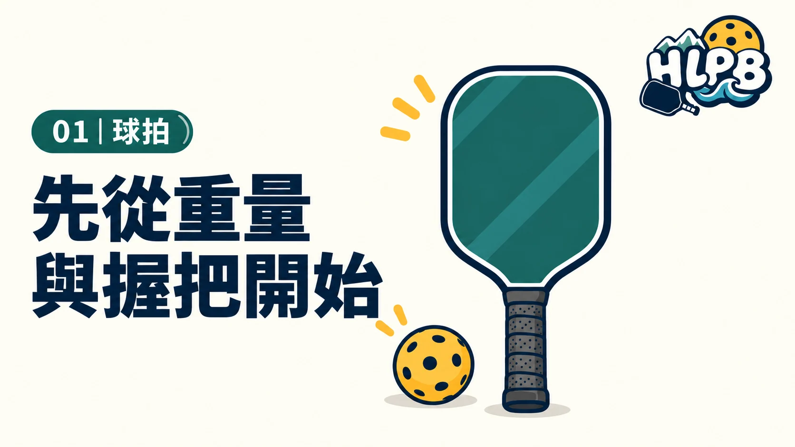

01｜球拍
重量與握把，先看這些數字
重量常用 oz（盎司），握把尺寸通常指周長，不是直徑。
- 7.5 oz ≈ 213 g
- 和 8.5 oz 比較，靜態重量較輕；仍要留意重心。
- 8.0 oz ≈ 227 g
- 可拿這個重量作比較起點，試試連續揮拍是否順手。
- 8.5 oz ≈ 241 g
- 靜態重量較重，試打時確認長時間拿拍的負擔。
- 4 吋 ≈ 10.2 cm
- 較細的握把例子，手小可先拿來試握。
- 4¼ 吋 ≈ 10.8 cm
- 較粗一些的握把例子，別只按身高選尺寸。
- 握柄長度
- 想用雙手反拍，確認兩隻手都放得下。
握把尺寸與握把布選擇 →
以上是規格換算例子，不是各品牌通用的輕／中／重分級。握把布及配重也會改變重量與握感。